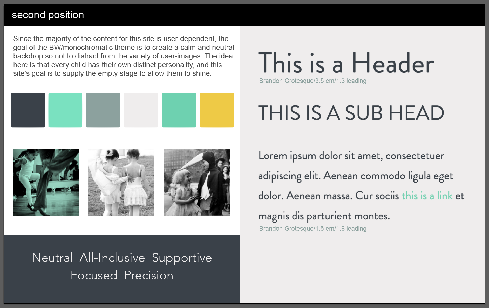

Second Position is a site that raises money through costume sales to fund dance programs for children, because every child deserves to have their moment in the spotlight.
Goals
Create a marketplace for used costumes while helping those less fortunate experience the gift of dance.
Challenges
1. The majority of my users will be moms. There are the new-to-dance moms with kids under age 10, and then there are the dance-mom-veterans, like my mom, who have had dancing daughters for the last 36 years. This puts my target market in the age range of 30-65. These moms need to be the power users of this site. The challenge here is to create a site that is visually appealing while also being simple enough for users who may not be as familiar with online selling.
2. Users are responsible for uploading their own images, so every image is going to look different. Find a way to make the browsing pages look uniform with so many different styles of photos.
3. Convincing dancers to donate their costumes. Even though they may have only worn them for 20 minutes and haven't pulled them out of the closet in a decade, those costumes hold a lot of sentimental value and can be hard to part with. Make it clear that the costumes are going to a worthy cause.
Process
Word Lists
Style Tiles
Sketching


Logo / Icons / Element development
Wire Frames
Colors
This site requires a gender-neutral color palette. This color palette should also be a sort of blank canvas for the variety of different user-images. Since there is so much color in each costume, it is important to use these neutral colors to avoid content clutter. I've chosen some shades of grey and white with yellow and green accents for links and other items that I want to stand out more.
#3A4149
#454E56
#EFEDED
#EFCB35
#8BA19E
#76E2C0
#6AD2B0
Typography
Aa Bb Cc Dd Ee Ff Gg Hh Ii Jj Kk Ll Mm Nn Oo Pp Qq Rr Ss Tt Uu Vv Ww Xx Yy Zz
1 2 3 4 5 6 7 8 9 0
Futura PT regular / 1em / 1.6
Aa Bb Cc Dd Ee Ff Gg Hh Ii Jj Kk Ll Mm Nn Oo Pp Qq Rr Ss Tt Uu Vv Ww Xx Yy Zz
1 2 3 4 5 6 7 8 9 0
Futura PT bold / 1em / 1.6